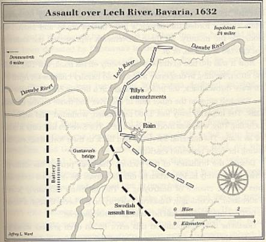

One thing I've found that's helpful to me in my career as a tester is the ability to abstract information from one venue to another. Testers and especially those who do Quality Assurance activities must be reasonably adept at abstracting knowledge from one domain and applying it in another, all the while accounting for those parts that don't apply in the new domain. There are many ways to look at this but here I want to consider problem solving as a technique. I'm going to look at the technique of problem solving in relation to the domain of combat. My goal is to show how you can translate aspects of the combat domain into your more traditional day-to-day scenarios.
A guy named Gustavus Adolphus is a good historical example of a military commander who could win battles, but could not win wars. As anyone who reads the history of warfare can tell you, winning great tactical engagements is only a tool to reach a wider goal. Each tactical victory has to have consequences and the tactical triumphs must translate into gains towards that wider goal. Before looking at Adolphus' specific situation, let's look at a very specific technique.
Probably one the oldest and most effective tactical devices is to attract attention in one place, while taking decisive action somewhere else entirely. If you've ever seen a stage magician, you'll probably have seen them employ this tactic with sleight-of-hand and some means of distraction. In many forms of sport, there are tactical strategies to make the opposing team think you're doing one thing when, in fact, you're doing another, such as a pump fake in basketball or the halfback pass in American football. In war, this tactical device is at the heart of the principle of holding at one place while striking at another.
The Chinese strategist Sun Tzu summarized this when he spoke of the zheng element, which holds or constrains the enemy in one place, and the qi element, which flanks or encircles the enemy. Zheng is an "obvious" and direct move against which the enemy attempts to fortify themselves. By contrast, qi is the indirect, presumably (and hopefully) unexpected move that defeats the enemy by its very unexpected nature. If the qi succeeds extremely well, it can be transformed into the zheng. In other words, the misdirection may work so well that you can actually use it as the direct element. Likewise, the direct method can become an indirect method (zheng becomes qi), depending upon how the situation unfolds.
The point here is that zheng and qi (direct and indirect) are mutually supportive forces; they interact between and depend upon each other to greater and lesser degrees. This combination has always been important, because it's often instrumental in achieving the military commander's single greatest imperative: hitting a decisive point with a force that is powerful enough to render any opposition ineffective and achieve what's known as "breakthrough". If a commander has overwhelming strength, a breakthrough by deception may not even be needed. But when such a degree of strength is lacking, the astute commander will try to deceive his enemy so that the strike is not foreseen. The other alternative is to hold or contain the enemy at another place with enough force to keep him from moving.
In military terminology, the principle of holding at one place and striking at another is called the convergent assault. If you think about it, the world of testing and the world of QA have various arenas where "assaulting" a problem in a convergent fashion is an optimal way to deal with the problem.
Yet, with that brief tie-in to QA, who am I talking about attacking here? Well, nobody in particular. In our case, we, as QA or test practitioners, attack problems or situations. We do so with tactical goals in mind (overcoming the immediate problem) but hopefully also with a strategic, overriding goal (or set of goals) in mind (process improvement within our group or company). Sometimes rather than hitting a problem directly, you want to hit it from another angle - while still keeping your original angle of attack in mind. Sometimes you want to hit a problem from multiple sides - hoping to achieve breakthrough on at least one front.
Now let's consider the Swedish king Gustavus Adolphus in the seventeenth century. He used his own version of the tactical principle discussed above when he discovered a German Imperial army emplaced on the Lech River in Bavaria on 16 April 1632. To put this in some historical context, the battle came midway in the Thirty Years War, which had started in 1618 as a religious conflict between Roman Catholics and Protestants. The war degraded into an effort by the stoutly Catholic Ferdinand II of Austria to transform the by then virtually impotent Holy Roman Empire, of which he was the emperor, into a powerful centralized state. He would, of course, be the full sovereign of this state. (At the time, the empire was really nothing more than a rag-tag series of little German territories that all wanted to keep their independence.)
By 1630, the Catholic Imperial army had moved quite decisively and took out most Protestant or independent opposition and was fairly close to conquering all of Germany. This obviously alarmed King Gustavus Adolphus because this threatened the existing Swedish hegemony in the Baltic Sea. So, Gustavus, in response, took a strong army to northern Germany in 1630.
Lesson: Gustavus was presented with what he perceived as a problem. He then enacted action to deal with this problem.
Gustavus won some initial battles there against the Imperial army, which was headed up by Marhsal Johan de Tilly. It came to pass that Tilly withdrew his army eastward from where Gustavus was attacking. Tilly put his army in a very formidable defensive position along the eastern bank of the north-flowing Lech River, pretty much just before it entered the Danube, which flows east to west.
Lesson: While some battles were won, the strategic goal (the threat of Ferdinand) was still not met nor was the tactical goal (defeat of the Imperial army) met.
Now obviously Gustavus wanted to defeat Tilly but he had a problem in that a new army was forming in Moravia under Albrecht von Wallenstein. Moravia is a region of the central and eastern Czech Republic. So this would have been to the east of where Gustavus was; further east than where Tilly was entrenched.
Lesson: While dealing with one problem, another was coming up.
Gustavus thought he could beat both armies but this would require those armies to meet him in open battle rather than stand on the defensive, which would force Gustavus to fight entrenched armies in a small-scale siege warfare. Tilly was already in such a defensive position and had broken all the bridges on the Lech as far as thirty miles south of his current position. Gustavus thus had two choices: he could try to cross the Lech well to the south, beyond where the bridges had been destroyed, and then turn back north and block Tilly's line of retreat (south to Austria). The thinking was that this would force Tilly to fight rather than remain on the defensive. Or Gustavus could cross the Lech only a few miles to the south, then swing back in a tight arc and lock Tilly into a corner (where Tilly's back was against the Lech and the Danube) and this would also force him to fight.
Yet Gustavus felt that both options would take too much time since he would have to move his entire, sizable army whichever plan he adopted. He knew Wallenstein was marching on him and he wanted to get rid of one army (Tilly's) before dealing with another (Wallenstein's).
Lesson: Gustavus noted his problem, noted some solutions to it, but also noted that those solutions, as stated, were simply not effective, particularly because dealing with the two problems simultaneously would be more difficult than dealing with them at the same time.
What Gustavus ended up doing was adopting a plan that comprised direct (zheng) and indirect (qi) components.
To help you get a feel for this situation as it played itself out, you check out a picture of the Assault on Lech River:

The picture is copyright of Jeffrey Ward and is used here with permission. Since the picture might be a little hard to discern, here is a little (obviously ASCII-idealized) map of the situation:
= = = = = = = = = = = = = = = Danube = = = = = = = = = = = = = =
| | _ _ _
| | /
| | L |
| | e | Tilly's
Gustavus | | c | Defense
| | h |
| | |
| |
Cannons | |
| |
| |
- - - - -
Bridge - - - - - Troops
Gustavus' first move was to make threatening gestures against Tilly's army, which convinced Tilly that Gustavus might attempt to force his way across the river in a massive frontal assault. (This was the zheng element.) Thus Tilly held his troops ready in a defensive line. Gustavus set up a massive row of cannons on the west bank of the Lech, about five miles south of the Danube. These could pound the Imperial forces if they tried to retreat south. East of those cannons -- thus further south of the Danube -- and out of sight of Tilly's army, Gustavus had his army build a pontoon bridge. Then he had a relatively small force (about three hundred soldiers) cross the bridge. This small force established a bridgehead on the eastern bank, about a mile south of Tilly's fortifications.
Now, to be sure, Tilly was informed of the enemy element to his immediate south (on his side of the river) but was not too concerned because it was such a small group; plus, the cannons kept his army from really attacking too much anyway. Tilly felt he could extend his defensive position if he had to meet a threat from that direction.
The next night, however, the main body of Swedish infantry crossed the pontoon bridge, along with some artillery, while cavalry forded the stream even a little further south of the bridge and then moved up alongside the infantry. (All these movements represented the indirect approach -- qi.) Keep in mind that Tilly still thought Gustavus was planning on hitting frontally because while all this movement across the river was going on, Gustavus was distracting Tilly with what appeared to be the main brunt of his force across the river.
Eventually Tilly wised up and realized the true threat on his flank and tried to dislodge it but his infantry and cavalry were caught in a deadly crossfire between the Swedish cannons on the other side of the river and those that now faced him on his own eastern bank. In the ensuing battle, the Imperial army lost about four thousand troops and Tilly himself was mortally wounded. The Imperial army fled back to their fortifications and then, having very little choice, started moving eastward.
Lesson: Gustavus achieved a great tactical victory. When presented with a set of problems, he chose one to deal with. Instead of hitting it head on with everything he had, he approached the problem in two different ways.
Now we get to a point where Gustavus showed that his strategic sense was not quite up to the level of his tactical sense. To wit, he did not pursue the defeated army and thus he lost a great chance to obliterate it completely. The survivors, in fact, joined Wallenstein's army, which had finally gotten close enough to help out. What this means is that Gustavus's victory on the Lech, though a veritable model of tactical engagement and indirection, had no strategic consequences. Gustavus then went on to make this error even worse by committing an even greater strategic blunder.
Lesson: Gustavus did not completely handle the problem. In fact, his first problem became merged with his second problem. So while his approach was good, his follow-through was lacking.
Gustavus wanted to, again, encourage Wallenstein (and the remnants of Tilly's original army) to come into open battle rather than rest on the defensive. He felt that destroying the Bavarian countryside would provoke Wallenstein to come out and stop him. Yet by this time Wallenstein knew Gustavus's general pattern and so he ignored the provocations and stayed entrenched.
Wallenstein, for his part, wanted to cut off Gustavus's supply and communications line, which went back through Saxony (northern Germany) to Sweden. He felt this would be the most effective route to stopping Gustavus. So you might note that Wallenstein, too, wanted a bit of indirection rather than a frontal assault. In any event, Wallenstein joined up with his Imperial ally Maximilian of Bavaria at the town called Amberg. This position carried out his goal and threatened the Swedish supply line.
Lesson: Gustavus's two problems, which had merged, started a third problem.
Now here's where things get interesting. In order for Wallenstein to present this threat, he had to leave the road to Vienna essentially unprotected. (Vienna was the capital of the empire and the seat of Ferdinand.) Gustavus was encouraged by his advisers to ignore the threat to his supply line and continue south to seize Vienna. The idea here being that even if northern Germany were lost (a tactical loss), Vienna would be seized (a strategic gain) and Ferdinand would probably sue for peace. Yet Gustavus did not want to take this risk. And note that if he took the city (as he surely could have), and even if Wallenstein had come south to oust him from it (as he surely would have), Gustavus would have been in a formidable defensive position to resist Wallenstein.
Lesson: Balancing risks due to the problems was what Gustavus had to do. He did not do this or, rather, he misjudged the risks and the cost-benefit of doing one action over another.
Gustavus missed an opportunity for a great, potentially war-ending victory. What he ended up doing, if you're curious, is move to Nuremberg, which is just west of Amberg, and entrenched himself as he had done before on the western bank of the Lech. Again, he was hoping to draw Wallenstein into battle. But Wallenstein, wary of that move, also entrenched. Note that Gustavus's supply line was still threatened since he didn't deal with that situation. So his army was getting hungry. Finally, Gustavus ordered a direct assault on Wallenstein's position. This failed, with horrible causalities.
Lesson: Gustavus, in order to deal with a problem he had let get worse, simply attacked it head-on, largely in desperation. This proved to be futile but his options were essentially reduced to one.
After that dismal frontal assault, Gustavus finally did set out for Vienna in the hope that Wallenstein would come after him and thus, by default, meet him in open battle. Wallenstein, however, refused to take even this bait, and turned north into Saxony (a state that was an ally of Sweden) and captured Leipzig and totally broke Gustavus's line of communications with Sweden. Now, instead of continuing south to take Vienna, Gustavus hurried back north. Incidentally, you can probably imagine how tired and demoralized his army was getting. This time he caught Wallenstein in a position where Wallenstein had to fight or lose his entire army. Gustavus won a massive battle southwest of Leipzig, although he died in the battle.
Lesson: Gustavus had a second chance for the strategic victory but was, again, blinded by tactical concerns. So even though he succeeded with yet another tactical goal, after suffering horrible losses, he still did not attain strategic victory.
With Gustavus's death, the situation remained exactly as it was. Nothing, in the end, had changed.
Well, Gustavus was great at winning tactical battles. He did this by recognizing the problem he faced and then approaching the problem from more than one direction. However, when given a chance to deal with the problems strategically (i.e., the root causes of the problems), he failed to do so and thus did not win any wars.
What I think someone can learn about this is how to think about problems. When dealing with a problem or even a set of problems, look for the underlying causes of those problems and how you might deal with those. While you can spend a lot of time making tactical strikes at the problems, you should keep your eye out for a decisive "strategic strike" that may be what you really need. This involves balancing risks but also doing a cost-benefit analysis for certain actions. Sometimes the cost will be heavy, but the benefit will perhaps be proportionally greater. Likewise, in order to get yourself into a position to make any sort of strategic strike in the first place, you often have to attack the problems and their causes from different angles.
One of my primary motivations here was to show you a way to approach problem solving exercises, including decision analysis, opportunity analysis, and situation assessment -- all of which played a part in Gustavus's campaign. My secondary motivation was to show you how to abstract lessons from what, at first, appears to be a very different venue.
I hope you realize that you can learn a lot from looking at various situations and abstracting the relevant details. This doesn't just have to apply to combat situations and problem solving. Population dynamics may have something to say about test case "populations." The psychological study of "group think" may give you ideas about how how teams work together. Reading about earthquake patterns may give you ideas about "fault lines" of instability in applications and how to figure out where they are and recognize when they became unstable. Learning how fiction novelists work to tell a compelling story can help you better understand how to write narrative in the form of business cases. Sound strange? Well, all I can say is try it out. You might be surprised by how you can abstract information from one domain and readily apply it in another.